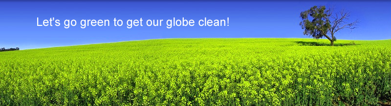

The environmental movement, a term that includes conservation and green
politics, is a diverse scientific, social, and political movement for addressing
environmental issues. Environmentalists advocate the sustainable management of
resources and stewardship of the environment through changes in public policy
and individual behavior. In its recognition of humanity as a participant in (not
enemy of) ecosystems, the movement is centered on ecology, health, and human
rights.
Yes, it is an oft-repeated statement, but its relevance never recedes. Lots of fossil
fuels are burned to generate electricity; the more we use, the more we burn, he more we
pollute the environment. A mere act of switching off the lights and electrical appliances
when not required can save huge amounts of energy. Many people these days construct their
houses and office in a way that more and more daylight can be used instead of using light bulbs.
If you can get online it’s the best way to accessyour daily dose of news instead of
flipping through the thick pile of your regular newspapers. Millions of trees are cut
to supply papers; you can make a dint into this indiscriminate felling of trees by
discontinuing your printed subscription and switching to online subscription.
We all know about the current fuel crisis and this crisis is caused by an ever-increasing
number of gas-guzzling automobiles being acquired by millions of people. To make matters
worse even food crops are being used to produce biofuels so that people can drive their cars.
Why not use the public transport; it’s not only cheaper, it’s also healthier and environment
friendly because first,you’ll have to walk a distance to use the public transport and second,
lesser vehicles will be on the road. In fact this will also reduce the frequency of traffic jams.
This is particularly true with the plastic products that you use. Once you throw them
away they become a part of a huge pile of non-biodegradable garbage our planet is rapidly
accumulating. First of all you should discourage the use of plastics in your day-to-day life
but even if it is unavoidable try to recycle as many plasticbr products as you can so
that fewer replacements are produced and fewer plastic objects are dumped on earth.
Politicians, fortunately or unfortunately enjoy/wield great powers and they can usher big
changes if they have the intention. Make a cleaner environment a political issue and vote
for only those politicians that show sensitivity towards climate and environment. If you
do some research online you will discover, to your shock, how politicians stall proactive
environmental-friendly legislations and policies due to personal greed and business affiliations.
Let the companies and organizations that wreak havoc with your environment go out of business;
stop using their products. Some individuals and organizations comprehend the gravity of the
situation only when you hit below the belt, and in this case, it is the money that you snatch
out of their hands by refusing to do business with them.
Someday your children will grow up and inherit the planet and then their children will grow up
and inherit the planet from them. Make a beginning and start sensitizing and educating your
children so that they can handover a healthier planet to their children. Teach them how to
conserve power and not to exploit the natural resources of our planet. Tell them how important
it is to preserve the flora and fauna. Also make them aware from the beginning itself what a
catastrophe can be unleashed upon earth if we don’t take care of our surroundings.
We do not inherit the earth from our ancestors, we borrow it from our children. ~Native American Proverb~